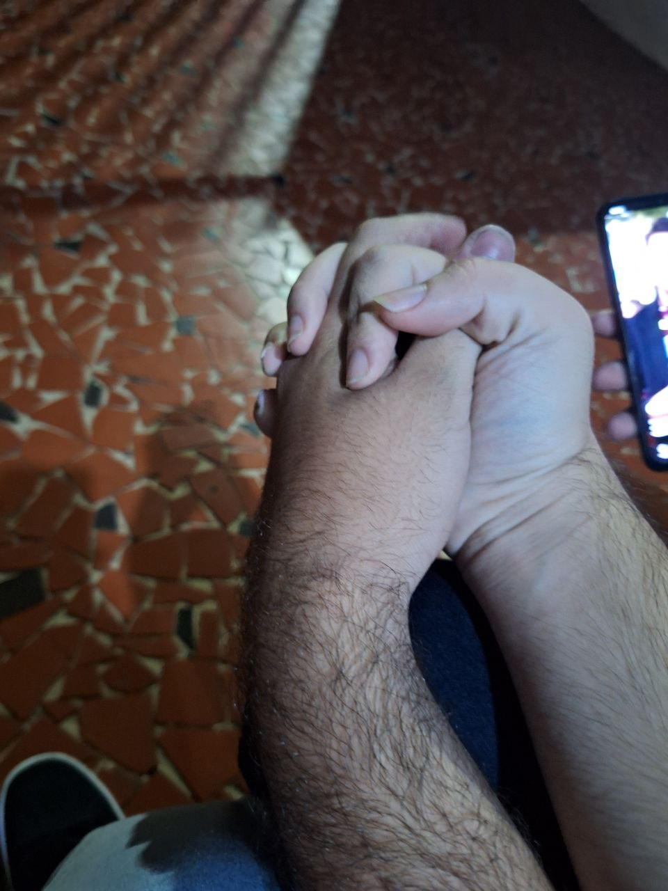

Por Dudu, com todo o carinho.
Achei que você era meio doidão. Nunca imaginei que a gente fosse se aproximar. Mas, curiosamente, a gente acabava se falando, a cada três meses, sobre algo extremamente profundo.
Lembro das vezes que entrava no seu servidor só pra ver se você estava bem. Ficava cinco minutinhos, sem saber nada sobre você, mas querendo te ver.
Você me contava fofocas, falava dos rolês que ia. Aos poucos, foi sendo mais direto. Me via crescer. Queria crescer junto. E você estava decidido: queria alguém pra caminhar com você.
De início, não quis aceitar que tudo aquilo era pra mim. Mas você foi claro. E eu percebi: também queria crescer com você.
Nosso amor foi crescendo. Avançando. Assumimos o relacionamento. Você veio aqui. Eu te abracei. E entendi: encontrei o que procurava. Você.
Quando aconteceu, eu soube. Eu te amava. E sempre vou te amar. Te ver hoje me enche de orgulho. E quero que você se orgulhe de mim também.
Eu vou te fazer a pessoa mais feliz do mundo. Com amor, Dudu.
Obrigado por caminhar comigo.
